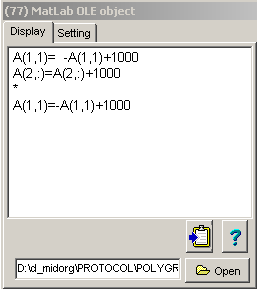
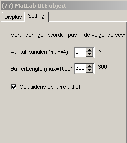
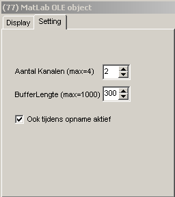
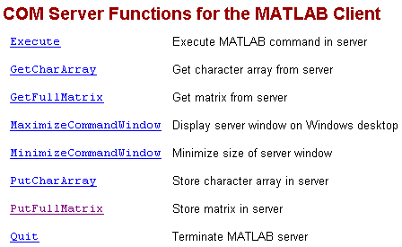

Inline Matlab Bewerkingen (Midac,77)
Vooraf
Deze documentatie heeft een voorlopige status.
Afhankelijk van de toekomstige ervaringen, kunnen de specificaties worden gewijzigd.
Inleiding
Met deze functies kunnen door MatLab bewerkingen op signalen worden uitgevoerd. Na bewerking door MatLab, kunnen de bewerkte signalen als normale Midac-rekenkanalen worden behandeld.
De bewerkingen kunnen zowel tijdens de opnamen alsook tijdens het terugkijken worden uitgevoerd.
Uiteraard zijn er grenzen aan de mogelijkheden van de bewerkingen tijdens een opname, omdat hierbij de snelheid van MatLab en het transport van en naar MatLab een rol spelen. Om deze grenzen zover mogelijk op te rekken, kan de gebruiker zowel het aantal kanalen als ook de bloklengte zo instellen dat voor iedere situatie een optimale snelheids prestatie wordt behaald.
Beschrijving
De funktie heeft 4 ingangs-kanalen en 4 uitgangs-kanalen.
Hoewel de funktie zelf op een sample by sample base wordt aangeroepen, wordt MatLab slechts aangeroepen aangeroepen als het einde van het buffer bereikt is. De bufferlengte is instelbaar. Op deze wijze wordt een aanzienlijke snelheidswinst geboekt. De traagheid wordt enerzijds veroorzaakt door het aanroepen van MatLab en de daarmee samenhangende data-uitwisseling en anderzijds door het feit dat MatLab geoptimaliseerd is voor vector berekeningen.
Het nadeel van het gebruik van een buffer, is dat de door MatLab berekende signalen altijd de bufferlengte in tijd achterlopen.
Om een verdere optimalisatie te bewerkstelligen, is ook het aantal kanalen (en daarmee de hoeveelheid data die tussen Midac en MatLab moeten worden overgedragen) instelbaar gemaakt.
In principe zou dit in de bekijken-mode kunnen worden gecompenseerd ???
|
De funktie toont standaard een venster, waarin de MatLab commandos kunnen worden ingevoerd. De inhoud van dit memo wordt opgeslagen in een M-file en de naam van de M-file wordt in het Midac protocol opgeslagen.
Momenteel wordt hetzelfde array gebruikt voor invoer van en uitvoer naar MatLab. Het data-array dat met MatLab wordt uitgewisseld, is in Matlab beschikbaar als A [ 1..nchan, 1..buflen]
Het overdragen van commentaar naar MatLab is niet toegestaan ?? Daarom is gekozen om alles als commentaar te beschouwen, vanaf (en inclusief) een regel die begint met een sterretje "*". Hier kunnen dus ook (zoals in het voorbeeld hiernaast) alternatieve formules staan voor toekomstig gebruik.
Als het memo wordt gewijzigd, verschijnt er een label. Door op dit label te klikken worden de wijzigingen geactiveerd.
Het klembord knopje heeft momenteel geen funktie. |
 |
|
Instellingen
Met het aantal kanalen, wordt zowel het aantal ingangskanalen, alsook het aantal uitgangskanalen ingesteld. Wil men b.v. op 1 signaal een aantal bewerkingen uitvoeren, die resulteren in 3 uitgangssignalen, dan moet het aantal kanalen op 3 worden ingesteld.
De bufferlengte is de lengte (in samples) van 1 kanaal.
Een gewijzigde instelling van het aantal kanalen en/of de bufferlengte wordt (vooralsnog) pas aktief na het opnieuw starten van Midac.
Met het aankruisvakje "Ook tijdens opname aktief", wordt bepaald of MatLab alleen wordt aangeroepen tijdens terugkijken of ook tijdens opname. |
 |
Technische aantekeningen (niet bestemd voor de gebruiker)
|
|
 |
Voor het transport van en naar Matlab, kan alleen van een character-array of een complex array gebruik worden gemaakt.

Mogelijke koppelingen tussen Matlab en Midac 
ad 1. Matlab importeert een opgenomen Midac file in 
Jan heeft dit al gerealiseerd, zowel in Matlab code alsook in C-code (veel sneller).
Momenteel werkt dit voor Midac datafile versie 4 (en vermoedelijk ook 5), versie 6 heeft nog een klein probleempje.
Voor de markerfiles werkt het voor beide bestaande versies.
ad 2. Midac exporteert de (gehele) opname in Matlab format 
Er is weliswaar een voorbeeld Delphi programma beschikbaar (van Delphi 3000), maar de noodzaak is vrij gering als 1) goed werkt. Het vergt nu een investering om het voorbeeld te implementeren en te debuggen, maar bovendien vergt het onvoorziene investeringen in de toekomst. Derhalve niet doen.
ad 3. Midac exporteert het geselecteerde gedeelte direct naar Matlab 
Middels OLE is dit eenvoudig te realiseren.
Dit is met name handig als men een (klein) stukje signaal wil analyseren, c.q. een fraai plaatje wil maken.
Doen dus.
ad 4. Midac runt een gecompileerd Matlab programma 
Nut : complexe Matlab functies kunnen zowel tijdens opname als review in Midac gebruikt worden.
Inspanning ?????
ad 5. Midac gebruikt tijdens opname Matlab om bewerkingen uit te voeren 
Omdat niet voorspeld kan worden hoeveel tijd het OLE proces krijgt / verbuikt, is dit een onverantwoorde actie tijdens opnamen. Niet doen dus.
ad 6. Midac gebruikt tijdens review mode Matlab, om bewerkingen uit te voeren 
Dit is eenvoudig te realiseren en biedt de mogelijkheid aan gebruikers om iedere bewerking uit te voeren die in Matlab mogelijk is.
Doen dus.
ad 7. Rekenfuncties uit Midac in Matlab gebruiken 
Gezien de wezenlijk verschillende benadering van Matlab (vector-based) en Midac (sample-based) lijkt dit niet echt handig.
Bovendien is de toegevoegde waarde beperkt.
Voorlopig niet doen dus.
ad 8. Rekenfuncties in een standaard vorm opbergen (DLL?), zodat ze bruikbaar zijn in zowel Matlab als Midac 
Net als bij 7, speelt de verschillende benadering hierbij een remmende rol.
Bovendien zijn vele Midac functies visueel interactief , hetgeen moeilijk relaliseerbaar lijkt in Matlab.
Niet doen.
ad 9. Embedding van Matlab objects in Midac 
Lijkt heel leuk, met name om ingewikkelde berekeningen en mooie plaatjes in Midac te tonen.
De meerwaarde is echter beperkt, omdat via 1. nagenoeg hetzelfde bereikt kan worden.
Leuke stage-opdracht.
Eigen aantekeningen:
Rijvector: v = [ 2,3,5]
Columnvector u = [3;4;5]
Een vector mag gewoon uitgebreid / ingekort / getransposed worden v = [2;4]
Filter designer levert structure, met de relevante elementen in een rijvector.
teller van het filter: filter_name.tf.num
noemer van het filter (bij FIR = 1) filter_name.tf.den
Ry * Kol = inprodukt (getal)
Kol * Ry = uitprodukt (matrix)
Dus convolutie on sample-by-sample base kan als volgt worden gedefinieerd
Signal = [signal(2:end); new_sample]
new_result = Filter * Signal
© Copyright Instrumentele Dienst 
SM/GvV 05-02-2000